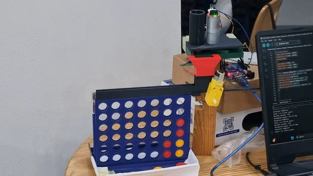

Course paper, IEEE conference format, 2026
Vision-Based Connect-4 Robot: Closed-Loop Game-State Extraction and Verified Token Placement
MCTR 1010 Image Processing for Mechatronics, German University in Cairo
Our camera-guided robot plays Connect-4 against a person. It refuses boards that cannot happen, picks its move with minimax, drops a real token, and only believes the move once its camera sees it.
Below, the robot's real code runs in your browser: the Python that reads the camera, checks the board, and plans, and the compiled Arduino sketch that drives the motors. Only the camera picture, motors, and table are simulated.
The robot's score for each column. The highlighted one is its pick.
Waking the robot's brain (Python in your browser, about 10 MB the first time)
In testing, columns 1 to 3 never missed and column 7 missed 3 of 20 drops. With misses on, the page drops the token in the next column that often.
The page draws the motors, encoder, and carriage around the real chip program. The encoder speed is an assumption; the carriage times are the sketch's own.
The real robot, from our final demo, in real time. The laptop shows the dashboard: minimax picks the robot's move in 0.495 s, the carriage drops a red token into the board, and the camera picture updates to show it landed.
A new board from the camera only counts if it is exactly one legal move away from the last board the robot trusted. A chip that vanished, two new chips at once, or a chip floating above an empty cell: the robot rejects it and keeps the last good board.
When the robot drops a token, it already knows what the board should look like. It accepts its own move only when the camera shows that exact board within 10 seconds. A token that slid into the wrong column stops the robot with an error, instead of silently corrupting the game.

We measured these on the real robot, under indoor light with a fixed camera mount, for our final course report.
The misses grow toward column 7 because the carriage finds a column by running its motor for a set time, with no sensor to say where it is. The longer the trip, the more the error adds up.
Cells read correctly, out of about 200 labelled cell images. The simple thresholds won: the board is blue and the tokens are red and yellow under steady light, while the model had little data to learn from.
3 to 15 s from command to a verified move, 7.5 s on average. The time is the mechanism and the camera check, not the image processing.
Added after the course, to test two ideas from modern AI on this project's own material.
Semantic search over the paper and the four milestone reports, run in your browser. It finds the three passages closest in meaning to your question and links to their pages. It quotes the documents and never writes an answer of its own.
On 16 test questions, a passage holding the answer is in the top three for 14.
We showed each of the 42 holes in a board photo to CLIP, an image model from OpenAI that learned from pictures and captions across the web and never saw our board. For each hole it picked the best caption: an empty hole, a red disc, or a yellow disc. The robot's simple colour rules read the same holes.
One photo, 42 holes: a small sample, computed offline.

How the parts connect, and where each one lives in the code.



vision.py finds the blue frame, warps it to 800 by 800, and reads each hole with HSV colour rules.game_state.py is gate 1, the validator that accepts only one legal move.minimax.py searches 5 moves ahead with alpha-beta pruning.hardware.py sends the column over serial and runs gate 2, the camera check.dispenser.ino releases one token by encoder count and drives the carriage by timing.We are Andrew Abdelmalak, Daniel Boules, David Girgis, Kirolous Kirolous, Samir Yacoub, and Youssef Salama. We built the robot for MCTR 1010 Image Processing for Mechatronics at the German University in Cairo, Spring 2026, supervised by Dr. Omar M. Shehata.
Course paper, IEEE conference format, 2026
MCTR 1010 Image Processing for Mechatronics, German University in Cairo